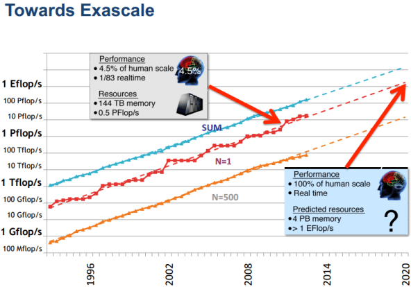
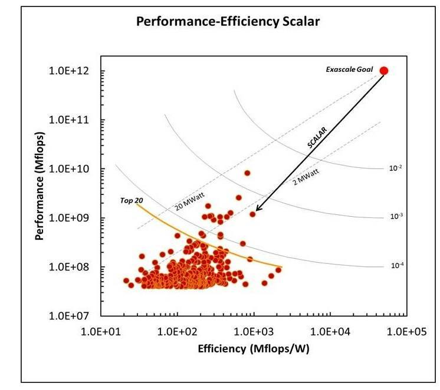
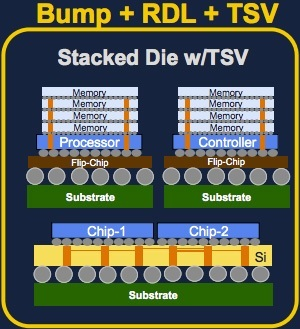

If you're doing research in a particular area you really need to be at the bleeding edge of the innovation in that field. The other thing I have always found useful is that if you're designing a system always know your users, understand the way they think, what they want and walk in their shoes. To this effect, firstly I have been attending the HPC users conferences and forums (courtesy: SERC, IISc) and secondly I have been doing some background on trends of innovation in computing - in particular for the next generation EXASCALE computing. The advancements in supercomputer design are about 5 years ahead of servers and servers are about 2-3 years ahead of desktops. So watching the supercomputer technology space gives us a good idea of what to expect in commodity technology about 5-7 years from now.
Who better to listen to than Tim Mattson from Intel. He gives you the best of both worlds - users and the system designers. He has a background of in programming the molecular scattering software for HPC Systems and is on the front row of systems design at Intel Research and I was very fortunate to listen to 2 of this talks at IISc and then at IPDPS 2015. (Credits: Some parts of this blog are from his talk).
First a low down on what is ExaScale Computing - Today's fastest supercomputer in the world is China's Tianhe-2 at 33.86 petaFLOPS. ExaScale computing is just the next logical step i.e. building a exaFLOPS machine. After this usually people throw back 2 questions at me -
1. At every step on the way we went from gigaScale to teraScale to petaScale, what's new in exaScalecale. Simply cram a few more transistors probably a few nanometers smaller giving you better density on chip.
2. Do we really need exaScale machines? (Tim calls them ExaSkeptic!!) Is this the computer scientists adrenaline rush to take on new useless problems? I mean most scientists and users are still trying to figure our what to do with petaScale.
1. The answer to this is many-fold.
• Power.....??
If we look at the graph of how we have been scaling in terms of FLOPS over the past few decades (picture below) we see that we have been fairly linear and as promised every decade we have increased processing a thousand fold. By that logic if we extrapolate we should be getting our first exaFLOPS machine somewhere in the year 2020. Alongside if we take a look at the power consumed by these systems. Right now, the most efficient system the K supercomputer needs one to two megawatts per petaflop/s. Multiply that by 1,000 to get to exascale and the power (2000 megawatts)is simply unaffordable. There have been discussions on these lines and the maximum promised power for a permissible exascale machine would be 20 megawatts, which means we need a 100 fold reduction in power consumption. This is a HUGE challenge by itself for computer architects and electrical engineers. We are already at our power budget with the fastest supercomputer Tianhe-2 using 17.3MWatt. By contrast, the human brain takes about 20 to 40 watts which reminds me of my old article on Nature inspired Computer Arch.
|  |  |
Saving power is all about managing your data movement well. Accordingly a lot of research and development has gone into developing better Memory Systems hierarchies. Electrically speaking, the new kid on the block that is fast maturing is 3D die-stacking, which allows vertically stacking multiple integrated chips. It's exactly what is sounds like - You take a completed computer chip (DRAM, say), and then place it on top of another chip (a CPU). As a result, two chips that used to be centimeters apart on a circuit board are now less than a millimeter apart. This reduces power consumption and also improves bandwidth by a huge amount. Obviously, though, you can’t just take a DRAM chip and whack it on top of a CPU. The chips need to be designed with chip stacking in mind, and it takes specialized technology which comes with it's own pro's and cons or as we computer scientists call it trade off's.
 There are three main ways of stacking chips. The most basic one is Bump + RDL which involves stacking two chips together, and then connecting them both to a flip chip at the bottom of the stack; the chips are physically close, which is a good step forward, but they can’t communicate directly with each other. Second technology which seems most mature in terms of fab is called through-silicon via (TSV). With TSV, vertical copper channels are built into each die, so that when they’re placed on top of each other the TSVs connect the chips together. This will used soon to stack DRAMs vertically providing either another level or caching or part of physical memory (under heavy reserach). The third technique uses a silicon transposer. A transposer is effectively a piece of silicon that acts like a “mini motherboard,” connecting two or more chips together (similar to a breadboard). The advantage of this technique is that you can reap the benefits of shorter wiring but the existing chips fab process does not have to be changed at all. Transposers are expected to be used in upcoming multi-GPU Nvidia and AMD graphics cards. One or more of these 3D stacking technology will mature and be part of the next gen exascale machine. The easiest to stack electically and most in demand would be raw DRAM memory chips which would be used to quell the divide between the fast CPU and slower main memory. [and fortunately for me I have been focussing my work on this area ;-)].
• Architecture race!
Heterogeneous architectures with GPU/accelerators-based machines will be common place soon and I would go so far to say that heterogeneous machines will dominate the top 10 machines in the next 3 years. Also expect further specialization in hardware (FPGAs/ASICs) - for example the Anton 2 supercomputer built by D. E. Shaw Research (New York) is a special-purpose system for molecular dynamics simulations.
As Horst Simon appropriately puts it, One way to look at the race to exascale is a swim meet where all are leading towards the same goal. We are currently following three different swim lanes in terms of architectures, each of which claims one of the top four slots in the Top500 list. The multicore path is built around high-end CPUs, such at Intel’s x86, SPARC and IBM’s Power 7. The Manycore/embedded approach uses many simpler, low power cores from embedded systems. Finally, there is the GPU/accelerator path using highly specialized processors from the gaming/graphics market space, such as NVIDIA’s Fermi, the Cell processor and Intel’s Xeon Phi (MIC). Accordingly, Tianhe-2 (Xeon Phi accelerator based) and Titan (GPU accelerator based) taken No. 1 and 2 spot. The manycore embedded processor path has led to Blue Gene in the third spot and the K computer, using SPARC CPUs, is at No. 4.
There is an indication that multicore with complex cores is nearing the end of the line? In the embedded lane, Blue Gene is the last of the line. Will there be any more large-scale embedded multicore machines? And with GPU/accelerators, Intel bought Cray’s interconnect technology and WhamCloud. Will Intel develop complete systems? Is this the end of the road for Von Neumann architecture that we all have come to know and love. I think it's not, but check out the wonderful debate on this at MICRO 2014.
• Software / Programming paradigms
The first and obvious challenge we see is programming the heterogeneous machines transparently. For this we have somewhat a decent solution albeit more work is required around standards. The vendors of accelerators have usually kept hardware and programming models compatible with "OpenCL". (Shame on you if you use CUDA! - you are egging NVIDIA ego to not use standards. This will come back to bite users when hardware changes and your programs will not run on other accelerators). Thanks to OpenCL we are now all familiar with the model of offloading computation to accelerators and launching kernels.
We should keep in mind Amdahl’s law kicking in - speedup of a program using multiple processors in parallel computing is limited by the sequential fraction of the program (amended to include) "plus the parallel book-keeping overhead". The second programming paradigm research goes into exascale Runtime Parallelism where we are limited by systemic challenges of utilization, data movement cost, load imbalance, fault tolerance, scalability. There are 2 schools of thought to address this problem - Evolutionary and Revolutionary (Courtesy Intel). Up until today we have programmed massively parallel programs using OpenMP pragmas + MPI for message passing (popularly referred to as MPI+X). The model worked very well despite some MPI complexity. However there is a fundamental problem with MPI when moving to exascale - it assumes the node to which the message has been passed to is available and the underlying interface is resilient and fault tolerant. At exascale the number of cores are going to be in the order of millions and the number/frequency of soft errors would be tremendous making the model of availability of a node assumed by MPI null and void. Programming with MPI at extreme scale would also be tedious given its programming model (more on this here). There have been various attempts at solving this using revolutionary programming models, most mature of which is CHARM++ from Sanjay Kale's research group at UIUC. CHARM++ is a message-driven execution model supporting an actors programming model. Charm++ uses over-decomposition with concurrent schedulers that exploit parallel slackness to keep the load balanced (and hide latency) and relocatable data-block and objects plus local checkpointing and message logging to support resilience. Tim himself is at the front of one of the other revolutionary efforts called Open Community Runtime(OCR). Notable mentions include PGAS, Grappa, Legion, etc.
We should also warn the revolutionary brigade about MPI and OpenMP being moving targets. The evolutionary company are releasing OpenMP 4.0 and MPI3 which are supposed to bring a sea of changes targeted to fix their weakness. These will see easy adoption in the user community due to its programming familiarity and proven stability.
Various government (U.S. Dept Of Energy FastForward project), private research institutes and multinational corporations (NVIDIA, Intel, IBM) are working on these problems. I have just merely scratched the surface of the problems in systems design and engineering in computers. There is a whole lot more action going on out there that I have left out intentionally (due to the article length constraint) or unintentionally (that I may not be aware of). Do leave your comments here or on hacker news about your take on this. But one this is for certain, there needs to be radical innovations in hardware and software for exascale.
2. This question of do we HAVE applications that will use exascale deserves a separate article by itself and it has many challenges and opportunities by itself. We have always used the MP-LINPACK ideal scaling benchmark but most real applications don’t look anything like MP-LINPACK. I will reserve this for a part 2 of this article.